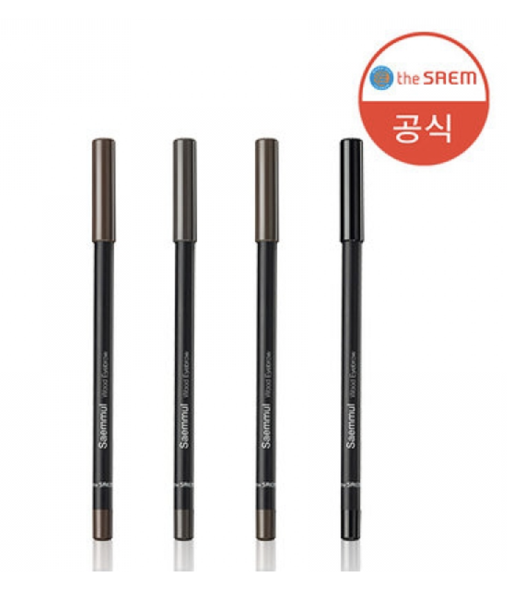
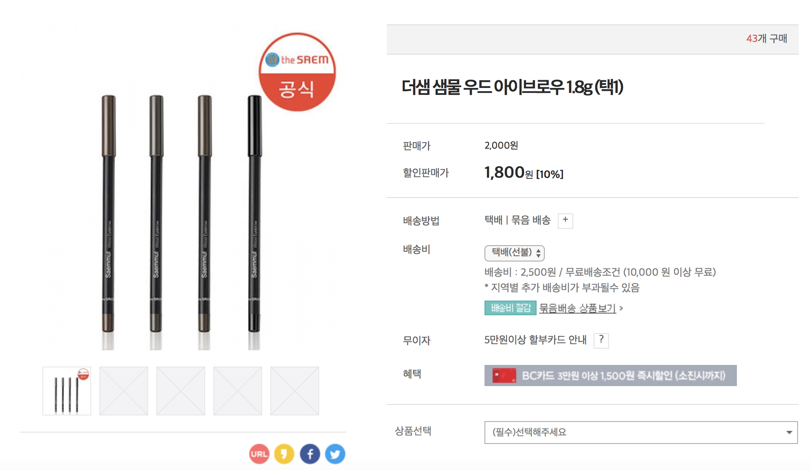
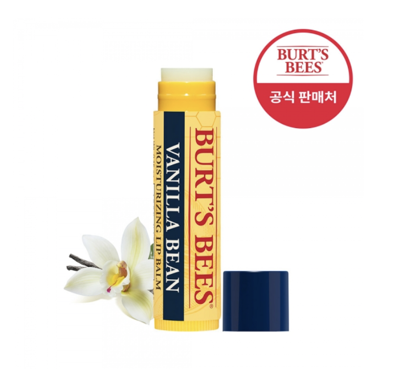

이미용 전문브랜드 인파우치의 제품.
눈섭이나 얼굴의 잔털 등 원하는 곳의 제모를 말끔하게 도와주는 제품.
민감한 피부를 위하여 스테인레스 안전커버를 사용하여 안전한 사용 가능.
마치 내 눈썹인 듯 자연스럽고 간편하게 쓱싹! 인생의 필수템 우드 아이브로우
 한번의 터치로 촉촉하게 생기 넘치는 입술. 자연 유래 성분이 건조해진 입술에 수분과 영양을 공급해주는 버츠비 오리지널 립 밤.

요즘엔 남자들도 꾸미는 시대! 그런데 아직도 기본적인 눈썹정리, 입술관리도 안하는 사람들이 있다?!
꾸미는게 귀찮은 남자들을 위한 정말 기본적인 아이템들만 모아놓은 패키지이다.
특히 다이소에서 저렴한 가격으로 구매할 수 있다는 점!
다이소몰에서 판매되어지고 있는 이 제품들은 할인이 되어지는 제품도 있고, 그렇지 않은 제품도 있었다.
주로 제품에 대한 설명과, 같이 사용하면 좋을만한 제품들, 제품의 효능 등이 적혀있었다.
이러한 세트들이 많이는 있지만 유사한 제품은 없는 것 같다.
꾸며보고 싶은데 꾸밀줄 모르는 사람, 뭐부터 시작해야 좋을지 모르겠는 사람, 꾸미는게 귀찮은 사람 모두를 위해 좋다.
다이소에서 구매하게 되면서 저렴한 가격으로 부담스럽지 않은 기초 화장품들만 모아 놓았다.
티나는 화장이 부담스러운 사람을 위해 티도 많이 나지 않는 제품들로만 구성되어있다.
1. 메인 이미지, 가격
2. 제품의 효능과 특징
3. 자세한 이미지들
4. 제품 설명
5. 리뷰